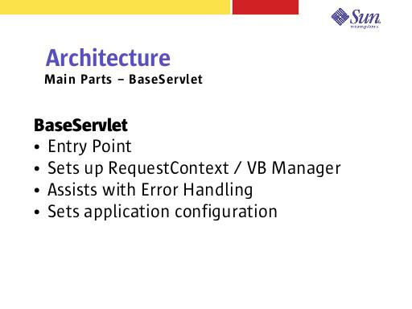

Notes:
Each application using this framework is expected to extend BaseServlet and set it up according to their needs.
As in all JATO applications, a servlet is the entry point for all requests. BaseServlet serves that purpose, plus it provides a lot of functionality that most applications require out-of-the-box.
It takes care of most of the plumbing automatically (creating a RequestContext, setting the VB Manager – We uses a special VB Manager that is descriptor aware).
A default onUncaughtException implementation is provided that delegates the exception (with a lot of additional information), to the nearest “error” handler. Since most processing is done during a handler, which is part of a displayItem (ViewDescriptor)... when an exception is caught, it is rethrown with the ViewDescriptor information allowing the nearest ViewDescriptor to the exception to be used to determine how the error should be handled.
The BaseServlet also provides a place to setup other misc. application configuration settings.